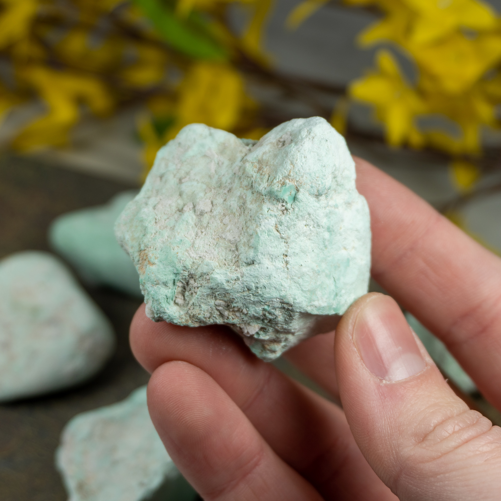

New here?

New to rockhounding and don't know where to start? Not to worry, we will show you the ropes. Click below to head over to our "Getting Started" guide
Getting StartedRocks & Minerals In Arkansas


Arkansas rockhounding maps to hunt for crystals, gemstones, minerals, and ores. Arkansas is a true gem for rockhounding enthusiasts, offering a wide variety of minerals, crystals, and fossils. The state is particularly famous for its stunning quartz crystals and beautiful diamonds. The Crater of Diamonds State Park, where visitors can search for their own diamonds, is a must-visit location for any rockhound. From the Ouachita Mountains to the numerous mineral-rich hot springs, Arkansas provides ample opportunities for both beginners and experienced rock collectors to make exciting discoveries.
Sponsored Dig Site

Own a digsite you would like to advertize in Arkansas? Contact us for more information about being our sponsor of the month! Email sponsors@rockhounding.org for more information.
Dig With UsPlease always bring appropriate attire and do research before venturing out to rock hunt and crystal hunt. Also, be sure to verify that the location you want to hunt at is available for public access. Rockhounding.org does our best to verify, but it is your responsibility to verify as well because sometimes things change. We are not liable for any actions you take from the information you find on this site.
Must Have Rockhounding Tools


Keeping accurate records of Rockhounding & Gemstone Hunting Locations is a community effort! Know of a good spot that is missing from our maps? Feel free to submit it below. Thank you for your contributions to the rockhounding community!
Popular Rocks, Crystals, & Gemstones In Arkansas
-
 Quartz
QuartzArkansas is famous for its high-quality quartz crystals. The Ouachita Mountains are home to the world's finest clear quartz, ideal for collectors and enthusiasts.
Read More -
Wavellite
Wavellite, a beautiful greenish-brown phosphate mineral, is found in Arkansas's Ouachita Mountains. Its radial patterns and translucent appearance make it popular among collectors.
Read More -
 Arkansas Diamond
Arkansas DiamondArkansas Diamonds, a unique variety of quartz crystals, are found at Crater of Diamonds State Park. They are yellow, brown, or colorless and resemble true diamonds.
Read More -
Novaculite
Arkansas's Ouachita Mountains contain vast deposits of Novaculite, a dense and fine-grained sedimentary rock. It is often used for making sharpening stones and whetstones.
Read More -
 Arkansas Fossils
Arkansas FossilsVarious fossil types can be found in Arkansas, including marine invertebrates and plant remains, providing a glimpse into the state's ancient geological history.
Read More -
 Malachite
MalachiteMalachite, a vibrant green copper carbonate mineral, can be found in Arkansas. It is known for its beautiful patterns and is often used for ornamental purposes.
Read More -
 Vanadinite
VanadiniteVanadinite, an orange-red mineral, can be found in Arkansas. It is a secondary mineral that forms from the oxidation of lead ore deposits and is prized for its stunning hexagonal crystals.
Read More -
 Amethyst
AmethystAmethyst, a purple variety of quartz, can occasionally be found in Arkansas. Its striking color and beautiful crystal formations make it a favorite among collectors.
Read More -
 Azurite
AzuriteAzurite, a deep blue copper carbonate mineral, can be found in Arkansas. It is often associated with malachite and is prized for its vivid color and lustrous crystals.
Read More -

Variscite
Variscite, a rare green phosphate mineral, can be found in Arkansas. It is often mistaken for turquoise and is popular among collectors for its vibrant green color and unique patterns.
Read More
Popular Rock Hunting Areas In Arkansas
-
 Crater of Diamonds State Park
Crater of Diamonds State ParkCrater of Diamonds State Park is the only public diamond mine in the world, where visitors can search for and keep any diamonds they find. Other gemstones and minerals can also be discovered here.
Read More -
 Ron Coleman Mining
Ron Coleman MiningRon Coleman Mining offers the opportunity to dig for your own quartz crystals. Located in the Ouachita Mountains, this site is known for its exceptional quality of clear quartz crystals.
Read More -
 Wegner Quartz Crystal Mines
Wegner Quartz Crystal MinesWegner Quartz Crystal Mines, nestled in the Ouachita Mountains, offers an unforgettable experience digging for quartz crystals, as well as a chance to find other minerals like garnets and amethyst.
Read More -
 Ozark National Forest
Ozark National ForestOzark National Forest is a great place to search for trace fossils, such as trilobites and crinoids. The beautiful scenery and diverse geological formations make it a fantastic destination for rockhounds.
Read More -
 Magnet Cove
Magnet CoveMagnet Cove is a geological wonder containing more than 100 different minerals, including magnetite, which gives the area its name. It is a paradise for collectors searching for rare and exotic minerals.
Read More -
 Stanley Shale
Stanley ShaleStanley Shale is a geological formation in Arkansas known for its abundant vanadinite deposits. The vibrant red crystals can be found in the weathered zones of lead and zinc ores.
Read More
Geology of Arkansas
Arkansas boasts a diverse and complex geology that dates back over a billion years. The state's geological history can be divided into several distinct eras, beginning with the Precambrian period, which saw the formation of ancient igneous and metamorphic rocks in the Ouachita Mountains.
During the Paleozoic Era, marine sediments were deposited across much of the state, forming limestone, shale, and sandstone. These layers were later uplifted and folded during the Ouachita Orogeny, an event that shaped the present-day Ouachita Mountains. The Carboniferous period saw the formation of extensive coal deposits, which were mined heavily in the state's past.
Throughout the Mesozoic and Cenozoic Eras, Arkansas experienced periods of erosion and deposition, creating the Mississippi Alluvial Plain and the Gulf Coastal Plain. The state's rich variety of mineral resources, including quartz, diamonds, and bauxite, can be traced back to these geological events.
In more recent times, the formation of the Mississippi River and its tributaries has further shaped the landscape of Arkansas. Today, the state's geology continues to evolve through natural processes, providing a fascinating environment for rockhounding and the study of Earth's history.